About Kazakhstan
The Republic of Kazakhstan, situated at the heart of Eurasia, appeared on the geopolitical map in 1991. The name Kazakh, of Turkic origin, is thought to mean “free man” – which is appropriate in a land historically populated by freedom-loving nomads. For thousands of years, these nomads tended vast cattle herds, pasture lands and the fertile soils of the region’s foothills and river valleys. Both the historic Silk Road and Sable Route, along which expensive furs were transported, passed through the region. This made Kazakhstan an important cultural, trade and economic bridge between Asia and Europe.
The Land of Many Nationalities
Kazakhstan is home to many different nationalities and faiths, all united by a common history. This variety of tradition, heritage and language is treasured by the people of the Republic of Kazakhstan, who believe there is much truth in the Japanese saying: “You can survive without your relatives; you cannot survive without your neighbours.” The people of Kazakhstan are proud of their diversity. Century after century, generation after generation, Kazakhstan has always sought to encourage friendship and tolerance among its people.
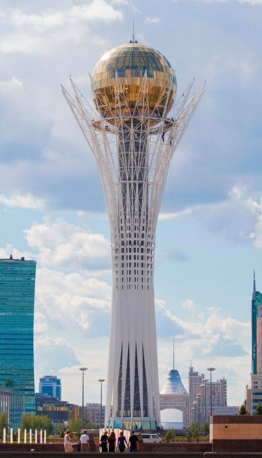
Currently around 130 nationalities populate Kazakhstan. Around 66% are Kazakhs, 21% are Russians and the remaining 13% constitutes Ukrainians, Uzbeks, Germans and Tartars. The predominant religions are Islam and Christianity.
The state language of Kazakhstan is Kazakh. However, the younger generations are becoming increasingly trilingual. Both Kazakh and Russian are used by the authorities and governing institutions of Kazakhstan. Kazakh is considered the language of the ancestors and Russian is widely spoken, while English is enjoying a growing popularity as the language most commonly used to communicate with foreign visitors.
Gallery
National symbols of the republic of Kazakhstan
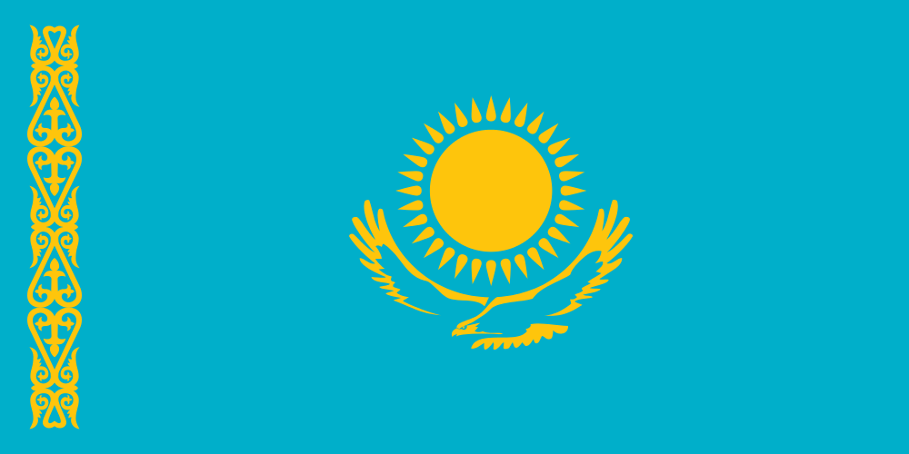
NATIONAL FLAG OF THE REPUBLIC OF KAZAKHSTAN
Flag is one of the main symbols of the state that represents its sovereignty and identity. The Russian term “flag” for Flag comes from the Dutch word “vlag” and means cloth of officially adopted size and colour and commonly with an image of emblem (coat of arms). The Flag of sovereign Kazakhstan was officially adopted in 1992. It was designed by Shaken Niyazbekov. The State Flag of the Republic of Kazakhstan is a rectangular breadth of blue colour with the image of the sun in its center with a soaring steppe eagle underneath. Along the flagstaff there is a vertical band with the national ornamental patterns. The images of the sun, rays, eagle and ornament are of golden colour. The ratio of the Flag’s width to its length: 1:2.
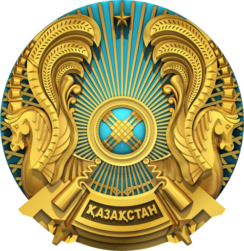
NATIONAL EMBLEM OF THE REPUBLIC OF KAZAKHSTAN
The Emblem is one of the main symbols of the state. The Russian term “gerb” for Emblem comes from the German word “Erbe” (legacy) and means hereditary distinctive sign that represents a combination of figures and objects to which a symbolic sense reflecting cultural and historical traditions of the state is given. The history is an evidence of the fact that the nomads of the Bronze Age that inhabited the territory of modern Kazakhstan identified themselves with a special symbol which is called totem. Its graphical expression further got the name “tamga”. This term has been for the first time used in the Turkic Khaganate. The Emblem of the sovereign Kazakhstan was officially adopted in 1992. The authors of the State Emblem are Kazakhstan’s famous architects Zhandarbek Malibekov and Shot-Aman Ualikhanov.
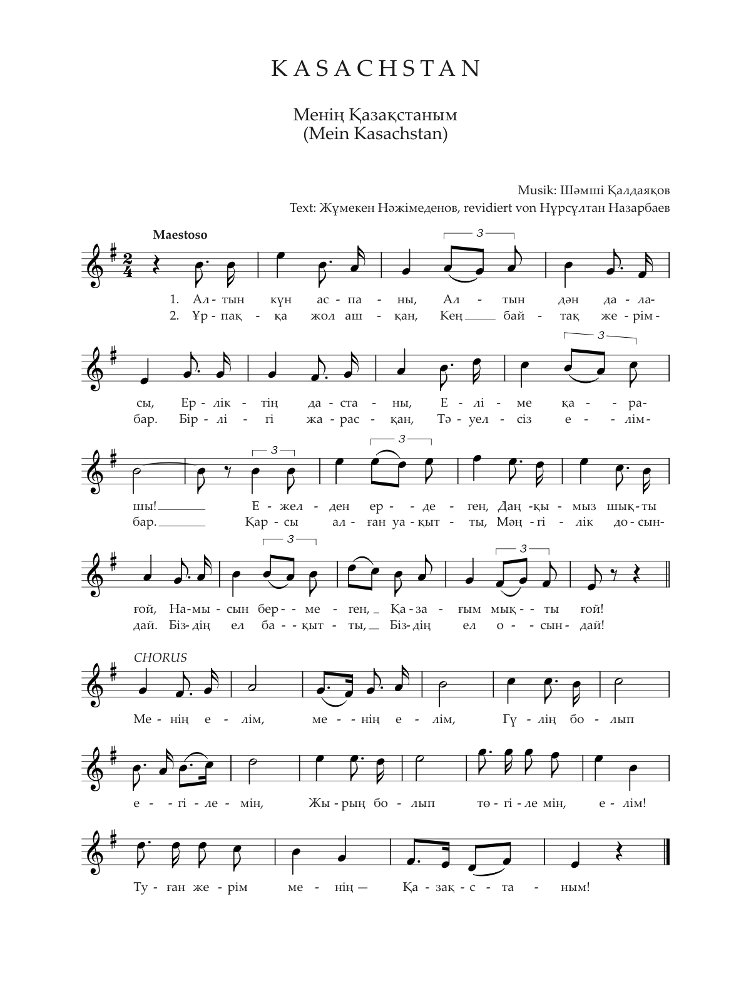
NATIONAL ANTHEM OF THE REPUBLIC OF KAZAKHSTAN
Text: Nursultan Nazarbayev, Zhumeken Nazhimedenov
Composer: Shamshi Kaldayakov
Sky of golden sun,
Steppe of golden seed,
Legend of courage -
Take a look at my country!
From the antiquity
Our heroic glory emerged,
They did not give up their pride
My Kazakh people are strong!
Chorus: My country, my country,
As your flower I will be planted,
As your song I will stream, my country!
My native land – My Kazakhstan!
The way was opened to the posterity
I have a vast land.
Its unity is proper,
I have an independent country.
It welcomed the time
Like an eternal friend,
Our country is happy,
Such is our country.
National meals of Kazakh nationality
KAZAKH SPECIALTIES ARE MEAT AND SOUR-MILK DISHES: besbarmak (meat and noodles), kazy, karta, shuzhuk, zhal, zhaya (types of horsemeat sausage), baursaks (savory dоughnuts), kurt (a hard curd chess), kozhe (milk soup), irimshik (curds) and airan (a уоghurt drink).
KUURDAK
KUURDAK (offal stew) - is a Central Asian dish which may sound exotic and complicated but it is really easy to prepare. It basically involves sautéing meat, potato and onions. With so few ingredients the quality of the ingredients becomes particularly important. Red meat is more commonly used but there is no rule against using chicken! Sometimes Kuurdak is made with innards such as intestines.
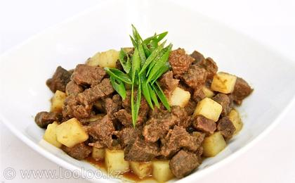
KAZY
KAZY is a common element on a dastarkhan, a table set for a festive meal. A smoked horse-meat sausage, is a particularly popular delicacy.
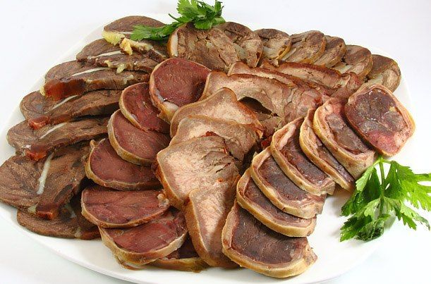
BESHPARMAK
BESBARMAK - the national kazakh dish,the term Beshbarmak means "five fingers", because the dish is eaten with one's hands. The boiled meat is usually diced with knives, often mixed with boiled noodles, and garnished with parsley and coriander.
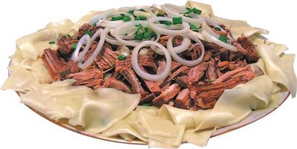
KUMYS
KUMYS - the national drink is made by fermenting raw unpasteurized mare's milk over the course of hours or days, often while stirring or churning. (The physical agitation has similarities to making butter). During the fermentation, lactobacilli bacteria acidify the milk, and yeasts turn it into a carbonated and mildly alcoholic drink.
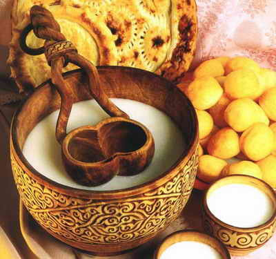
BAURSAKS
BAURSAKS (savoury doughnuts) - are must-have food in every Kazakh family. Now, baursaks are not only cooked and eaten by the Kazakhs. Baursaks are served to tea, before main course, to mare’s milk (‘kumys’), to snacks, and to strong broth (‘sorpa’). It is both festive and everyday food liked by many, both young and old.
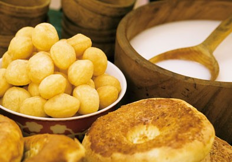
Street Abylaikhana 1/1
Kaskelen, Kazakhstan
Email: infomatrix@sdu.edu.kz
Give us a call or drop by anytime, we endeavour to answer all enquiries within 24 hours on business days.
Bank Account
Directions to SDU from Almaty
Sponsors:
- 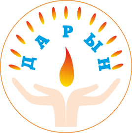

- 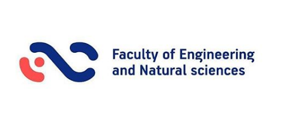